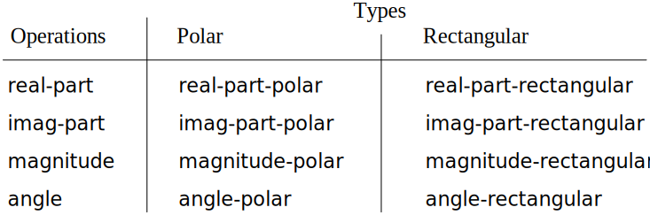
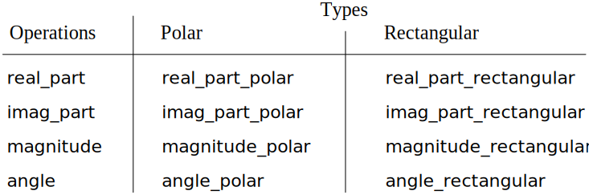

The general strategy of checking the type of a datum and calling an
appropriate
procedurefunction
is called
dispatching on type. This is a powerful strategy for obtaining
modularity in system design. On the other hand, implementing the dispatch
as in section 2.4.2 has two significant
weaknesses. One weakness is that the generic interface
proceduresfunctions(real-part,(real_part,imag-part,imag_part,magnitude, and
angle) must know about all the different
representations. For instance, suppose we wanted to incorporate a new
representation for complex numbers into our complex-number system. We
would need to identify this new representation with a type, and then add a
clause to each of the generic interface
proceduresfunctions
to check for the new type and apply the appropriate selector for that
representation.
Another weakness of the technique is that even though the individual
representations can be designed separately, we must guarantee that no two
proceduresfunctions
in the entire system have the same name. This is why Ben and Alyssa had
to change the names of their original
proceduresfunctions
from section 2.4.1.
The issue underlying both of these weaknesses is that the technique for
implementing generic interfaces is not additive. The person
implementing the generic selector
proceduresfunctions
must modify those
proceduresfunctions
each time a new representation is installed, and the people
interfacing the individual representations must modify their
code to avoid name conflicts. In each of these cases, the changes
that must be made to the code are straightforward, but they must be
made nonetheless, and this is a source of inconvenience and error.
This is not much of a problem for the complex-number system as it
stands, but suppose there were not two but hundreds of different
representations for complex numbers. And suppose that there were many
generic selectors to be maintained in the abstract-data interface.
Suppose, in fact, that no one programmer knew all the interface
proceduresfunctions
or all the representations. The problem is real and must
be addressed in such programs as
large-scale data-base-management systems.
What we need is a means for modularizing the system design even
further. This is provided by the programming technique known as
data-directed programming. To understand how data-directed
programming works, begin with the observation that whenever we deal
with a set of generic operations that are common to a set of
different types we are, in effect, dealing with a two-dimensional
table that contains the possible operations on one axis and the
possible types on the other axis. The entries in the table are the
proceduresfunctions
that implement each operation for each type of argument presented.
In the complex-number system developed in the previous section, the
correspondence between operation name, data type, and actual
procedurefunction
was spread out among the various conditional clauses in the generic
interface
procedures.functions.
But the same information could have been organized in a table, as shown in
figure 2.33.
figure 2.34.
Data-directed programming is the technique of designing programs to work
with such a
table directly. Previously, we implemented the mechanism that
interfaces the complex-arithmetic code with the two representation packages
as a set of
proceduresfunctions
that each perform an explicit dispatch on type. Here we will implement the
interface as a single
procedurefunction
that looks up the combination of the operation name and argument type in
the table to find the correct
procedurefunction
to apply, and then applies it to the contents of the argument. If we do
this, then to add a new representation package to the system we need not
change any existing
procedures;functions;
we need only add new entries to the table.
Original
JavaScript

Figure 2.33 Table of operations for the complex-number system.

Figure 2.34 Table of operations for the complex-number system.
To implement this plan, assume that we have two
procedures,functions,put and get, for
manipulating the
operation-and-type table:
(put
$\langle \textit{op} \rangle\ \langle \textit{type}
\rangle \ \langle \textit{item} \rangle$
)put($op$, $type$, $item$)
installs the
$\langle \textit{item} \rangle$
$item$
in the table, indexed by the
$\langle \textit{op} \rangle$ and the
$\langle \textit{type} \rangle$.
$op$ and the
$type$.
(get
$\langle \textit{op} \rangle\ \langle
\textit{type}$
)get($op$, $type$)
looks up the
$\langle \textit{op} \rangle$,
$\langle \textit{type} \rangle$
$op$,
$type$
entry in the table and returns the item found there.
If no item is found,
get returns
false.
a unique primitive value that is referred to by the name
undefined and recognized
by the primitive predicate
is_undefined.[1]
For now, we can assume that put and
get are included in our language. In
chapter 3 (section 3.3.3) we will see
how to implement these and other operations for manipulating tables.
Here is how data-directed programming can be used in the complex-number
system. Ben, who developed the rectangular representation, implements his
code just as he did originally. He defines a collection of
procedures,functions
or a
package, and interfaces these to the rest of the system by adding
entries to the table that tell the system how to operate on rectangular
numbers. This is accomplished by calling the following
procedure:function:
Original
JavaScript
(define (install-rectangular-package)
;; internal procedures
(define (real-part z) (car z))
(define (imag-part z) (cdr z))
(define (make-from-real-imag x y) (cons x y))
(define (magnitude z)
(sqrt (+ (square (real-part z))
(square (imag-part z)))))
(define (angle z)
(atan (imag-part z) (real-part z)))
(define (make-from-mag-ang r a)
(cons (* r (cos a)) (* r (sin a))))
;; interface to the rest of the system
(define (tag x) (attach-tag 'rectangular x))
(put 'real-part '(rectangular) real-part)
(put 'imag-part '(rectangular) imag-part)
(put 'magnitude '(rectangular) magnitude)
(put 'angle '(rectangular) angle)
(put 'make-from-real-imag 'rectangular
(lambda (x y) (tag (make-from-real-imag x y))))
(put 'make-from-mag-ang 'rectangular
(lambda (r a) (tag (make-from-mag-ang r a))))
'done)
function install_rectangular_package() {
// internal functions
function real_part(z) { return head(z); }
function imag_part(z) { return tail(z); }
function make_from_real_imag(x, y) { return pair(x, y); }
function magnitude(z) {
return math_sqrt(square(real_part(z)) + square(imag_part(z)));
}
function angle(z) {
return math_atan2(imag_part(z), real_part(z));
}
function make_from_mag_ang(r, a) {
return pair(r * math_cos(a), r * math_sin(a));
}
// interface to the rest of the system
function tag(x) { return attach_tag("rectangular", x); }
put("real_part", list("rectangular"), real_part);
put("imag_part", list("rectangular"), imag_part);
put("magnitude", list("rectangular"), magnitude);
put("angle", list("rectangular"), angle);
put("make_from_real_imag", "rectangular",
(x, y) => tag(make_from_real_imag(x, y)));
put("make_from_mag_ang", "rectangular",
(r, a) => tag(make_from_mag_ang(r, a)));
return "done";
}
Notice that the internal
proceduresfunctions
here are the same
proceduresfunctions
from section 2.4.1 that
Ben wrote when he was working in isolation. No changes are necessary in
order to interface them to the rest of the system. Moreover, since these
procedure definitionsfunction declarations
are internal to the installation
procedure,function,
Ben needn't worry about name conflicts with other
proceduresfunctions
outside the rectangular package. To interface these to the rest of the
system, Ben installs his
real-partreal_partprocedurefunction
under the operation name
real-partreal_part
and the type
(rectangular),list("rectangular"),
and similarly for the other selectors.[2] The interface also defines the
constructors to be used by the external system.[3] These are identical to Ben's internally defined
constructors, except that they attach the tag.
Alyssa's
polar package is analogous:
Original
JavaScript
(define (install-polar-package)
;; internal procedures
(define (magnitude z) (car z))
(define (angle z) (cdr z))
(define (make-from-mag-ang r a) (cons r a))
(define (real-part z)
(* (magnitude z) (cos (angle z))))
(define (imag-part z)
(* (magnitude z) (sin (angle z))))
(define (make-from-real-imag x y)
(cons (sqrt (+ (square x) (square y)))
(atan y x)))
;; interface to the rest of the system
(define (tag x) (attach-tag 'polar x))
(put 'real-part '(polar) real-part)
(put 'imag-part '(polar) imag-part)
(put 'magnitude '(polar) magnitude)
(put 'angle '(polar) angle)
(put 'make-from-real-imag 'polar
(lambda (x y) (tag (make-from-real-imag x y))))
(put 'make-from-mag-ang 'polar
(lambda (r a) (tag (make-from-mag-ang r a))))
'done)
function install_polar_package() {
// internal functions
function magnitude(z) { return head(z); }
function angle(z) { return tail(z); }
function make_from_mag_ang(r, a) { return pair(r, a); }
function real_part(z) {
return magnitude(z) * math_cos(angle(z));
}
function imag_part(z) {
return magnitude(z) * math_sin(angle(z));
}
function make_from_real_imag(x, y) {
return pair(math_sqrt(square(x) + square(y)),
math_atan2(y, x));
}
// interface to the rest of the system
function tag(x) { return attach_tag("polar", x); }
put("real_part", list("polar"), real_part);
put("imag_part", list("polar"), imag_part);
put("magnitude", list("polar"), magnitude);
put("angle", list("polar"), angle);
put("make_from_real_imag", "polar",
(x, y) => tag(make_from_real_imag(x, y)));
put("make_from_mag_ang", "polar",
(r, a) => tag(make_from_mag_ang(r, a)));
return "done";
}
Even though Ben and Alyssa both still use their original
proceduresfunctions
defined with the same names as each other's (e.g.,
real-part),real_part),
these declarations are now internal to different
proceduresfunctions
(see section 1.1.8), so there is no name
conflict.
The complex-arithmetic selectors access the table by means of a general
operationprocedurefunction
called
apply-generic,apply_generic,
which applies a generic operation to some arguments.
Apply-generic
The function
apply_generic
looks in the table under the name of the operation and the types of the
arguments and applies the resulting
procedurefunction
if one is present:[4]
Original
JavaScript
(define (apply-generic op . args)
(let ((type-tags (map type-tag args)))
(let ((proc (get op type-tags)))
(if proc
(apply proc (map contents args))
(error
"No method for these types -- APPLY-GENERIC"
(list op type-tags))))))
function apply_generic(op, args) {
const type_tags = map(type_tag, args);
const fun = get(op, type_tags);
return ! is_undefined(fun)
? apply_in_underlying_javascript(fun, map(contents, args))
: error(list(op, type_tags),
"no method for these types -- apply_generic");
}
Using
apply-generic,apply_generic,
we can define our generic selectors as follows:
function real_part(z) { return apply_generic("real_part", list(z)); }
function imag_part(z) { return apply_generic("imag_part", list(z)); }
function magnitude(z) { return apply_generic("magnitude", list(z)); }
function angle(z) { return apply_generic("angle", list(z)); }
Observe that these do not change at all if a new representation is
added to the system.
We can also extract from the table the constructors to be used by the
programs external to the packages in making complex numbers from real and
imaginary parts and from magnitudes and angles. As in
section 2.4.2, we construct rectangular
numbers whenever we have real and imaginary parts, and polar numbers
whenever we have magnitudes and angles:
Original
JavaScript
(define (make-from-real-imag x y)
((get 'make-from-real-imag 'rectangular) x y))
(define (make-from-mag-ang r a)
((get 'make-from-mag-ang 'polar) r a))
function make_from_real_imag(x, y) {
return get("make_from_real_imag", "rectangular")(x, y);
}
function make_from_mag_ang(r, a) {
return get("make_from_mag_ang", "polar")(r, a);
}
Exercise 2.77
Section 2.3.2 described a
program that performs
symbolic differentiation:
We can regard this program as performing a dispatch on the type of the
expression to be differentiated. In this situation the
type tag of the datum is the algebraic operator symbol
(such as +)(such as "+")
and the operation being performed is
deriv. We can transform this program into
data-directed style by rewriting the basic derivative
procedurefunction
as
Explain what was done above. Why can't we assimilate the
predicates
number?is_number
and
variable?is_variable
into the data-directed dispatch?
Write the
proceduresfunctions
for derivatives of sums and products, and the auxiliary code required
to install them in the table used by the program above.
Choose any additional differentiation rule that you like, such as the
one for exponents
(exercise 2.60), and install it
in this data-directed system.
In this simple algebraic manipulator the type of an expression is the
algebraic operator that binds it together. Suppose, however, we
indexed the
proceduresfunctions
in the opposite way, so that the dispatch line
in deriv looked like
What corresponding changes to the derivative system are required?
Explain what was done above.
Why can't we assimilate the predicates
number?is_number
and
same-variable?is_same_variable
into the data-directed dispatch?
The operator symbols come very handy as type keys in
the operator table. For numbers and variables, there aren't such
obvious keys, although we could introduce names for those types of
expressions, as well, if we change the way expressions are
represented as lists.
Write the
proceduresfunctions
for derivatives of sums and products, and the auxiliary code required
to install them in the table used by the program above.
function deriv_exponentiation(operands, variable) {
const bas = base(operands);
const exp = exponent(operands);
return make_product(exp,
make_product(make_exponentiation(bas, make_sum(exp, -1)),
deriv(bas, variable)));
}
function install_exponentiation_extension() {
put("deriv", "**", deriv_exponentiation);
return "done";
}
install_exponentiation_extension();
In this simple algebraic manipulator the type of an expression is
the algebraic operator that binds it together. Suppose, however,
we indexed the
proceduresfunctions
in the opposite way, so that the dispatch line in
deriv looked like
What corresponding changes to the derivative system are required?
We would need to change the order of arguments in the installation
procedure for the differentiation library:
Exercise 2.78
Insatiable
Enterprises, Inc., is a highly decentralized conglomerate company
consisting of a large number of independent divisions located all over the
world. The company's computer facilities have just been
interconnected by means of a clever network-interfacing scheme that makes
the entire network appear to any user to be a single computer.
Insatiable's president, in her first attempt to exploit the ability
of the network to extract administrative information from division files,
is dismayed to discover that, although all the division files have been
implemented as data structures in
Scheme,
JavaScript,
the particular data structure used varies from division to division. A
meeting of division managers is hastily called to search for a strategy to
integrate the files that will satisfy headquarters' needs while
preserving the existing autonomy of the divisions.
Show how such a strategy can be implemented with
data-directed programming.
As an example, suppose that each division's personnel records consist
of a single file, which contains a set of records keyed on
employees' names. The structure of the set varies from division to
division. Furthermore, each employee's record is itself a set
(structured differently from division to division) that contains
information keyed under identifiers such as
address and
salary. In particular:
Implement for headquarters a
get-recordget_recordprocedurefunction
that retrieves a specified employee's record from a specified
personnel file. The
procedurefunction
should be applicable to any division's file. Explain how the
individual divisions' files should be structured. In particular,
what type information must be supplied?
Implement for headquarters a
get-salaryget_salaryprocedurefunction
that returns the salary information from a given employee's
record from any division's personnel file. How should the record
be structured in order to make this operation work?
Implement for headquarters a
find-employee-recordfind_employee_recordprocedure.function.
This should search all the divisions' files for the record of a
given employee and return the record. Assume that this
procedurefunction
takes as arguments an employee's name and a list of all the
divisions' files.
When Insatiable takes over a new company, what changes must be made in
order to incorporate the new personnel information into the central
system?
Implement for headquarters a
get-recordget_recordprocedurefunction
that retrieves a specified employee's record from a specified
personnel file. The
procedurefunction
should be applicable to any division's file. Explain how the
individual divisions' files should be structured. In
particular, what type information must be supplied?
We are tagging each division's file with a unique identifier for the
division, using the tagging functions in
section 2.4.2. We assume that each
division provides an implementation of the
get_record function and installs
it in the company-wide operations table.
function make_insatiable_file(division, file) {
return pair(division, file);
}
function insatiable_file_division(insatiable_file) {
return head(insatiable_file);
}
function insatiable_file_content(insatiable_file) {
return tail(insatiable_file);
}
function get_record(employee_name, insatiable_file) {
const the_division
= insatiable_file_division(insatiable_file);
const division_record = get("get_record", the_division)
(employee_name,
insatiable_file_content(
insatiable_file);
return ! is_undefined(record)
? attach_tag(the_division, division_record)
: undefined;
}
Implement for headquarters a
get-salaryget_salaryprocedurefunction
that returns the salary information from a given employee's
record from any division's personnel file. How should the
record be structured in order to make this operation work?
Every division needs to implement functions such as
get_salary and install them
in Insatiable's operations table. Then, Insatiable's function
get_salary can look like this:
function make_insatiable_record(division, record) {
return pair(division, record);
}
function insatiable_record_division(insatiable_record) {
return head(insatiable_record);
}
function insatiable_record_content(insatiable_record) {
return tail(insatiable_record);
}
function get_salary(insatiable_record) {
const the_division =
insatiable_record_division(insatiable_record);
return get("get_salary", the_division)
(insatiable_record_content);
}
Note that we rely on the fact that any employee record that gets
returned by get_record is tagged
with its division, which is used in the generic function
get_salary to retrieve the
correct implementation from the operation table.
Implement for headquarters a
find-employee-recordfind_employee_recordprocedure.function.
This should search all the divisions' files for the record of
a given employee and return the record. Assume that this
procedurefunction
takes as arguments an employee's name and a list of all the
divisions' files.
function find_employee_record(employee_name,
personnel_files) {
if (is_null(personnel_files)) {
return undefined;
} else {
const insatiable_record
= get_record(employee_name,
head(personnel_files));
return ! is_undefined(insatiable_record)
? insatiable_record
: find_employee_record(employee_name,
tail(personnel_files));
}
}
When Insatiable takes over a new company, what changes must be made
in order to incorporate the new personnel information into the
central
system?
We would need to do the following, for each newly acquired company:
Decide a name to be used as tag for any data item related
to the new division.
Write all division-specific functions such as
get_salary
and install them in the company-wide operations table using the
division tag.
Add the employee files to the list of
personnel_files.
Note that this is a destructive
operation—similar to the extension of operations
tables—in that the data structure is permanently and
irrevocably modified;
section 3.3 explains this
concept in detail.
Message passing
The key idea of data-directed programming is to handle generic operations
in programs by dealing explicitly with operation-and-type tables, such as
the table in
figure 2.33.
figure 2.34.
The style of programming we used in
section 2.4.2 organized the required
dispatching on type by having each operation take care of its own
dispatching. In effect, this decomposes the operation-and-type table into
rows, with each generic operation
procedurefunction
representing a row of the table.
An alternative implementation strategy is to decompose the table into
columns and, instead of using intelligent operations that
dispatch on data types, to work with intelligent data
objects that dispatch on operation names. We can do this by
arranging things so that a data object, such as a rectangular number, is
represented as a
procedurefunction
that takes as input the required operation name and performs the operation
indicated. In such a discipline,
make-from-real-imagmake_from_real_imag
could be written as
Original
JavaScript
(define (make-from-real-imag x y)
(define (dispatch op)
(cond ((eq? op 'real-part) x)
((eq? op 'imag-part) y)
((eq? op 'magnitude)
(sqrt (+ (square x) (square y))))
((eq? op 'angle) (atan y x))
(else
(error "Unknown op -- MAKE-FROM-REAL-IMAG" op))))
dispatch)
function make_from_real_imag(x, y) {
function dispatch(op) {
return op === "real_part"
? x
: op === "imag_part"
? y
: op === "magnitude"
? math_sqrt(square(x) + square(y))
: op === "angle"
? math_atan2(y, x)
: error(op, "unknown op -- make_from_real_imag");
}
return dispatch;
}
The corresponding
apply-genericapply_genericprocedure,function,
which applies a generic operation to an argument, now simply feeds the
operation's name to the data object and lets the object do the
work:[5]
Original
JavaScript
(define (apply-generic op arg) (arg op))
function apply_generic(op, arg) { return head(arg)(op); }
Note that the value returned by
make-from-real-imagmake_from_real_imag
is a
procedure—the internalfunction—the internaldispatchprocedure.function.
This is the
procedurefunction
that is invoked when
apply-genericapply_generic
requests an operation to be performed.
This style of programming is called message passing. The name
comes from the image that a data object is an entity that receives the
requested operation name as a message. We have already seen
an example of message passing in section 2.1.3,
where we saw how
cons,pair,car,head,
and
cdrtail
could be defined with no data objects but only
procedures.functions.
Here we see that message passing is not a mathematical trick but a useful
technique for organizing systems with generic operations. In the remainder
of this chapter we will continue to use data-directed programming, rather
than message passing, to discuss generic arithmetic operations. In
chapter 3 we will return to message passing, and we will see that
it can be a powerful tool for structuring simulation programs.
Exercise 2.79
Implement the constructor
make-from-mag-angmake_from_mag_ang
in message-passing style. This
procedurefunction
should be analogous to the
make-from-real-imagmake_from_real_imagprocedurefunction
given above.
Original
JavaScript
function make_from_mag_ang(r, a) {
function dispatch(op) {
return op === "real_part"
? r * math_cos(a)
: op === "imag_part"
? r * math_sin(a)
: op === "magnitude"
? r
: op === "angle"
? a
: error(op, "unknown op -- make_from_real_imag");
}
return dispatch;
}
Exercise 2.80
As a large system with generic operations evolves, new types of data
objects or new operations may be needed. For each of the three
strategies—generic operations with explicit
dispatch, data-directed
style, and message-passing-style—describe the changes that must be
made to a system in order to add new types or new operations. Which
organization would be most appropriate for a system in which new types must
often be added? Which would be most appropriate for a system in which new
operations must often be added?
Generic operations with explicit dispatch: For every new
type, we need to touch every generic interface function, and add a
new case.
Data-directed style: Here the implementation of the generic
interface functions can be neatly packaged in install
libraries for each new type. We can also have install
libraries for new operations.
Message-passing-style: Like in the data-directed style, we
need to write a library for each new type. In this case, the library
consists of a dispatch function with a case for every generic
interface function.
Overall, it's probably best to use a data-directed style when we need to
frequently add new operations, and message-passing, when we frequently
add new types.
[1]
The name undefined
is predeclared in any JavaScript implementation and should
not be used other than to refer to that primitive value.
[2]
We use the list
(rectangular)list("rectangular")
rather than the
symbol rectangularstring "rectangular"
to allow for the possibility of operations with multiple arguments, not
all of the same type.
[3]
The type the
constructors are installed under needn't be a list because a
constructor is always used to make an object of one particular
type.
Apply-generic
uses the
dotted-tail notation described in
exercise 2.20,
because different generic operations may take
different numbers of arguments.
In
apply-generic,apply_generic,
op has as its value the first argument to
apply-genericapply_generic
and
args has as its value a list of the remaining
arguments.
Original
JavaScript
Apply-generic also
uses the
primitive procedure
apply,
which takes two arguments, a procedure
and a list.
Apply
applies the procedure,
using the elements in the list as arguments.
The function
apply_generic
uses the function
apply_in_underlying_javascript
given in section 4.1.4
(footnote 2),
which takes two arguments, a function and a list, and
applies the function, using the elements in the list as arguments.